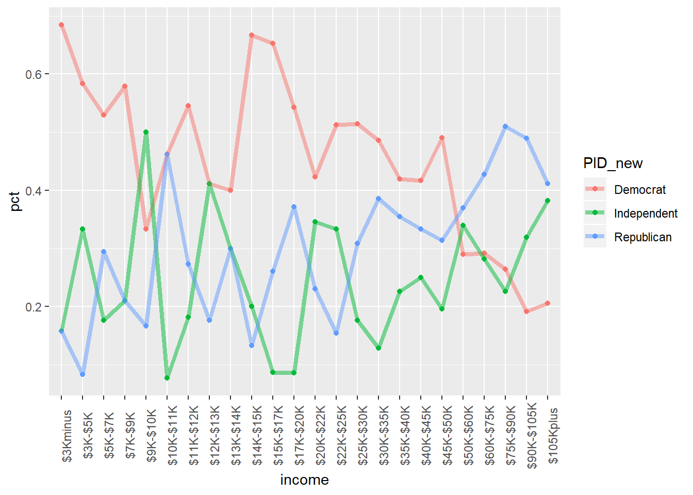
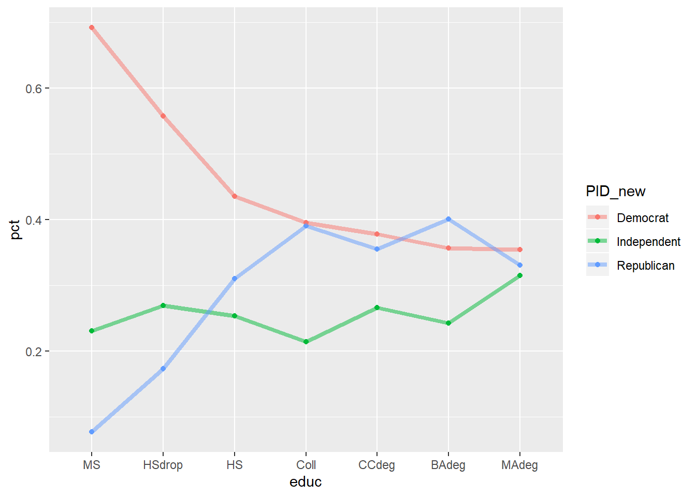
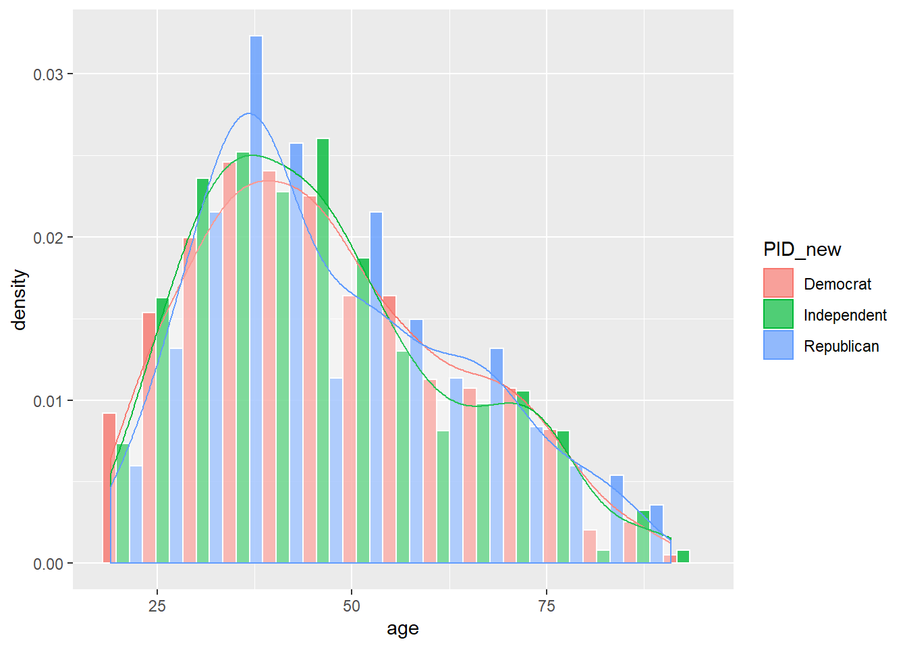

Multinomial Regression
May Ben-Hamo
library(tidyverse)
library(ggplot2)Iris dataset
The Iris flower data set or Fisher’s Iris data set is a multivariate data set introduced by the British statistician, eugenicist, and biologist Ronald Fisher in his 1936 paper The use of multiple measurements in taxonomic problems as an example of linear discriminant analysis.
The data set consists of 50 samples from each of three species of Iris (Iris setosa, Iris virginica and Iris versicolor). Four features were measured from each sample: the length and the width of the sepals and petals, in centimeters. Based on the combination of these four features, Fisher developed a linear discriminant model to distinguish the species from each other.
head(iris)iris_df = iris %>% rename_all(janitor::make_clean_names)
str(iris_df)## 'data.frame': 150 obs. of 5 variables:
## $ sepal_length: num 5.1 4.9 4.7 4.6 5 5.4 4.6 5 4.4 4.9 ...
## $ sepal_width : num 3.5 3 3.2 3.1 3.6 3.9 3.4 3.4 2.9 3.1 ...
## $ petal_length: num 1.4 1.4 1.3 1.5 1.4 1.7 1.4 1.5 1.4 1.5 ...
## $ petal_width : num 0.2 0.2 0.2 0.2 0.2 0.4 0.3 0.2 0.2 0.1 ...
## $ species : Factor w/ 3 levels "setosa","versicolor",..: 1 1 1 1 1 1 1 1 1 1 ...pairs(iris_df[,-5], pch = 21,
bg = c("#1b9e77", "#d95f02", "#7570b3")[unclass(iris_df$species)])
summary(iris_df)## sepal_length sepal_width petal_length petal_width
## Min. :4.300 Min. :2.000 Min. :1.000 Min. :0.100
## 1st Qu.:5.100 1st Qu.:2.800 1st Qu.:1.600 1st Qu.:0.300
## Median :5.800 Median :3.000 Median :4.350 Median :1.300
## Mean :5.843 Mean :3.057 Mean :3.758 Mean :1.199
## 3rd Qu.:6.400 3rd Qu.:3.300 3rd Qu.:5.100 3rd Qu.:1.800
## Max. :7.900 Max. :4.400 Max. :6.900 Max. :2.500
## species
## setosa :50
## versicolor:50
## virginica :50
##
##
## plot_hist_by_species = function(col, colname) {
iris_df %>% ggplot(aes(x = species , y = {{col}}, color = species)) +
geom_boxplot() + geom_jitter( alpha = .5, position=position_jitter(w=0.1,h=0.1) ) +
theme(legend.position = "") + labs(title = colname)
}
p1 = plot_hist_by_species(sepal_width, "Sepal Width")
p2 = plot_hist_by_species(sepal_length, "Sepal Length")
p3 = plot_hist_by_species(petal_length, "Petal Length")
p4 = plot_hist_by_species(petal_width, "Petal Width")
gridExtra::grid.arrange(p1, p2, p3, p4)
Fitting Multinomial Regression
library(VGAM)
model_1 = vglm( species ~ sepal_length + sepal_width + petal_length + petal_width, family=multinomial, iris_df)
summary(model_1)##
## Call:
## vglm(formula = species ~ sepal_length + sepal_width + petal_length +
## petal_width, family = multinomial, data = iris_df)
##
## Pearson residuals:
## Min 1Q Median 3Q Max
## log(mu[,1]/mu[,3]) -0.0003873 1.813e-10 6.194e-10 1.252e-06 0.0003643
## log(mu[,2]/mu[,3]) -1.9700374 -3.609e-04 -5.338e-06 4.763e-04 2.5601905
##
## Coefficients:
## Estimate Std. Error z value Pr(>|z|)
## (Intercept):1 35.490 22666.953 NA NA
## (Intercept):2 42.638 25.708 1.659 0.0972 .
## sepal_length:1 9.495 6729.217 NA NA
## sepal_length:2 2.465 2.394 1.030 0.3032
## sepal_width:1 12.300 3143.611 NA NA
## sepal_width:2 6.681 4.480 1.491 0.1359
## petal_length:1 -22.975 4799.227 -0.005 0.9962
## petal_length:2 -9.429 4.737 NA NA
## petal_width:1 -33.843 7583.502 NA NA
## petal_width:2 -18.286 9.743 NA NA
## ---
## Signif. codes: 0 '***' 0.001 '**' 0.01 '*' 0.05 '.' 0.1 ' ' 1
##
## Names of linear predictors: log(mu[,1]/mu[,3]), log(mu[,2]/mu[,3])
##
## Residual deviance: 11.8985 on 290 degrees of freedom
##
## Log-likelihood: -5.9493 on 290 degrees of freedom
##
## Number of Fisher scoring iterations: 21
##
## Warning: Hauck-Donner effect detected in the following estimate(s):
## '(Intercept):1', 'sepal_length:1', 'sepal_width:1', 'petal_length:2', 'petal_width:1', 'petal_width:2'
##
##
## Reference group is level 3 of the response# reference group:virginica
levels(iris_df$species)## [1] "setosa" "versicolor" "virginica"Predicting
preds_probs = predict(model_1, type = "response")
preds = apply(preds_probs, MARGIN = 1, which.max)
species_fun = function(level) return(levels(iris$Species)[level])
preds_class = map_chr(preds, species_fun)
# confusion matrix
table("Predicted" = preds_class, "Actual" = iris_df$species )## Actual
## Predicted setosa versicolor virginica
## setosa 50 0 0
## versicolor 0 49 1
## virginica 0 1 49National Election Study
Description
10 variable subset of the 1996 American National Election Study. Missing values and “don’t know” responses have been listwise deleted. Respondents expressing a voting preference other than Clinton or Dole have been removed (Rosenstone, Kinder, and Miller (1997)).
Format
A data frame with 944 observations on the following 10 variables:
populpopulation of respondent’s location in 1000s of peopleTVnewsdays in the past week spent watching news on TVselfLRLeft-Right self-placement of respondent: an ordered factor with levels extremely liberal, extLib < liberal, Lib < slightly liberal, sliLib < moderate, Mod < slightly conservative, sliCon < conservative, Con < extremely conservative, extConClinLRLeft-Right placement of Bill Clinton (same scale as selfLR): an ordered factor with levels extLib < Lib < sliLib < Mod < sliCon < Con < extCon newhamp 67DoleLRLeft-Right placement of Bob Dole (same scale as selfLR): an ordered factor with levels extLib < Lib < sliLib < Mod < sliCon < Con < extConPIDParty identification: an ordered factor with levels strong Democrat, strDem < weak Democrat, weakDem < independent Democrat, indDem < independent independentindind < indepedent Republican, indRep < waek Republican, weakRep < strong Republican, strRepageRespondent’s age in yearseducRespondent’s education: an ordered factor with levels 8 years or less, MS < high school dropout, HSdrop < high school diploma or GED, HS < some College, Coll < Community or junior College degree, CCdeg < BA degree, BAdeg < postgraduate degree, MAdegincomeRespondent’s family income: an ordered factor with levels $3Kminus < $3K-$5K < $5K-$7K < $7K-$9K < $9K-$10K < $10K-$11K < $11K-$12K < $12K-$13K < $13K-$14K < $14K-$15K < $15K-$17K < $17K-$20K < $20K-$22K < $22K-$25K < $25K-$30K < $30K-$35K < $35K-$40K < $40K-$45K < $45K-$50K < $50K-$60K < $60K-$75K < $75K-$90K < $90K-$105K < $105Kplus vote Expected vote in 1996 presidential election: a factor with levels Clinton and Dole
Source: Faraway Book:
library(faraway)
data(nes96)
str(nes96)## 'data.frame': 944 obs. of 10 variables:
## $ popul : int 0 190 31 83 640 110 100 31 180 2800 ...
## $ TVnews: int 7 1 7 4 7 3 7 1 7 0 ...
## $ selfLR: Ord.factor w/ 7 levels "extLib"<"Lib"<..: 7 3 2 3 5 3 5 5 4 3 ...
## $ ClinLR: Ord.factor w/ 7 levels "extLib"<"Lib"<..: 1 3 2 4 6 4 6 4 6 3 ...
## $ DoleLR: Ord.factor w/ 7 levels "extLib"<"Lib"<..: 6 5 6 5 4 6 4 5 3 7 ...
## $ PID : Ord.factor w/ 7 levels "strDem"<"weakDem"<..: 7 2 2 2 1 2 2 5 4 1 ...
## $ age : int 36 20 24 28 68 21 77 21 31 39 ...
## $ educ : Ord.factor w/ 7 levels "MS"<"HSdrop"<..: 3 4 6 6 6 4 4 4 4 3 ...
## $ income: Ord.factor w/ 24 levels "$3Kminus"<"$3K-$5K"<..: 1 1 1 1 1 1 1 1 1 1 ...
## $ vote : Factor w/ 2 levels "Clinton","Dole": 2 1 1 1 1 1 1 1 1 1 ...summary(nes96)## popul TVnews selfLR ClinLR DoleLR
## Min. : 0.0 Min. :0.000 extLib: 16 extLib:109 extLib: 13
## 1st Qu.: 1.0 1st Qu.:1.000 Lib :103 Lib :317 Lib : 31
## Median : 22.0 Median :3.000 sliLib:147 sliLib:236 sliLib: 43
## Mean : 306.4 Mean :3.728 Mod :256 Mod :160 Mod : 87
## 3rd Qu.: 110.0 3rd Qu.:7.000 sliCon:170 sliCon: 67 sliCon:195
## Max. :7300.0 Max. :7.000 Con :218 Con : 36 Con :460
## extCon: 34 extCon: 19 extCon:115
## PID age educ income vote
## strDem :200 Min. :19.00 MS : 13 $60K-$75K:103 Clinton:551
## weakDem:180 1st Qu.:34.00 HSdrop: 52 $50K-$60K:100 Dole :393
## indDem :108 Median :44.00 HS :248 $30K-$35K: 70
## indind : 37 Mean :47.04 Coll :187 $25K-$30K: 68
## indRep : 94 3rd Qu.:58.00 CCdeg : 90 $105Kplus: 68
## weakRep:150 Max. :91.00 BAdeg :227 $35K-$40K: 62
## strRep :175 MAdeg :127 (Other) :473The response will be party identification of the respondent: Democrat, Independent or Republican. The original data involved more than three categories; They collapse this to three for simplicity.
nes96$PID_new = case_when(
nes96$PID %in% c("strDem", "weakDem") ~ "Democrat",
nes96$PID %in% c("indDem", "indind", "indRep") ~ "Independent",
nes96$PID %in% c("weakRep", "strRep") ~ "Republican"
)
table(nes96$PID_new)##
## Democrat Independent Republican
## 380 239 325For simplicity, they consider only the age, education level and income group of the respondents.
# unique(nes96$income)
nes96 %>% group_by(income) %>% mutate(sum_inc = n()) %>% ungroup() %>% group_by(income, PID_new) %>%
summarise(n = n(), pct = n/ sum_inc) %>%
ggplot( aes( x= income, y= pct, col = PID_new, group = PID_new)) +
geom_point() + geom_line(alpha = .5, size =1.5) +
theme(axis.text.x = element_text(angle = 90))## `summarise()` has grouped output by 'income', 'PID_new'. You can override using the `.groups` argument.
In the book they converted income variable to a numberic variable by taking the midpoint of each range, lets do the same ( we don’t want to estimate too much parameters):
mid_points <- c(1.5,4,6,8,9.5,10.5,11.5,12.5,13.5,14.5,16,18.5,21,23.5,27.5,32.5,37.5,42.5,47.5,55,67.5,82.5,97.5,115)
nes96$numeric_income <- mid_points[unclass(nes96$income)]
summary(nes96$numeric_income)## Min. 1st Qu. Median Mean 3rd Qu. Max.
## 1.50 23.50 37.50 46.58 67.50 115.00nes96 %>% group_by(educ) %>% mutate(sum_inc = n()) %>% ungroup() %>% group_by(educ, PID_new) %>%
summarise(n = n(), pct = n/ sum_inc) %>%
ggplot( aes( x= educ, y= pct, col = PID_new, group = PID_new)) +
geom_point() + geom_line(alpha = .5, size =1.5) ## `summarise()` has grouped output by 'educ', 'PID_new'. You can override using the `.groups` argument.
nes96 %>% ggplot( aes( age, fill = PID_new, color = PID_new)) +
geom_histogram(aes(y=..density..) , bins = 15, alpha = .8, color = 'white', position = 'dodge') +
geom_density(alpha=.15, fill = 'white')
library(VGAM)
model_2 = vglm( PID_new ~ age + numeric_income , family=multinomial, nes96)
summary(model_2)##
## Call:
## vglm(formula = PID_new ~ age + numeric_income, family = multinomial,
## data = nes96)
##
## Pearson residuals:
## Min 1Q Median 3Q Max
## log(mu[,1]/mu[,3]) -1.584 -0.8589 -0.4004 0.9952 2.218
## log(mu[,2]/mu[,3]) -1.094 -0.8435 -0.2753 1.3800 2.016
##
## Coefficients:
## Estimate Std. Error z value Pr(>|z|)
## (Intercept):1 1.154791 0.273651 4.220 2.44e-05 ***
## (Intercept):2 -0.032387 0.310862 -0.104 0.917
## age:1 -0.004133 0.004700 -0.879 0.379
## age:2 -0.003907 0.005396 -0.724 0.469
## numeric_income:1 -0.017868 0.002667 -6.700 2.09e-11 ***
## numeric_income:2 -0.001744 0.002654 -0.657 0.511
## ---
## Signif. codes: 0 '***' 0.001 '**' 0.01 '*' 0.05 '.' 0.1 ' ' 1
##
## Names of linear predictors: log(mu[,1]/mu[,3]), log(mu[,2]/mu[,3])
##
## Residual deviance: 1984.539 on 1882 degrees of freedom
##
## Log-likelihood: -992.2695 on 1882 degrees of freedom
##
## Number of Fisher scoring iterations: 4
##
## No Hauck-Donner effect found in any of the estimates
##
##
## Reference group is level 3 of the response# ref category - republican
levels(factor(nes96$PID_new))## [1] "Democrat" "Independent" "Republican"predict(model_2,data.frame(age = 25, numeric_income=0),type="response")## Democrat Independent Republican
## 1 0.6037795 0.1852455 0.2109751predict(model_2,data.frame(age = 25, numeric_income=median(nes96$numeric_income)),type="response")## Democrat Independent Republican
## 1 0.4455226 0.2502312 0.3042463predict(model_2,data.frame(age = 25, numeric_income=mean(nes96$numeric_income)),type="response")## Democrat Independent Republican
## 1 0.4076149 0.2650188 0.3273663predict(model_2,data.frame(age = 50, numeric_income=median(nes96$numeric_income)),type="response")## Democrat Independent Republican
## 1 0.4306501 0.2432487 0.3261012predict(model_2,data.frame(age = 70, numeric_income=median(nes96$numeric_income)),type="response")## Democrat Independent Republican
## 1 0.4184309 0.2374178 0.3441513model_3 = vglm( PID_new ~ age + numeric_income + educ , family=multinomial, nes96)
summary(model_3)##
## Call:
## vglm(formula = PID_new ~ age + numeric_income + educ, family = multinomial,
## data = nes96)
##
## Pearson residuals:
## Min 1Q Median 3Q Max
## log(mu[,1]/mu[,3]) -2.986 -0.8454 -0.3919 1.000 2.267
## log(mu[,2]/mu[,3]) -2.318 -0.7826 -0.2850 1.198 2.283
##
## Coefficients:
## Estimate Std. Error z value Pr(>|z|)
## (Intercept):1 1.642650 0.331255 4.959 7.09e-07 ***
## (Intercept):2 0.445389 0.372285 1.196 0.2316
## age:1 -0.008194 0.004903 -1.671 0.0946 .
## age:2 -0.008041 0.005619 -1.431 0.1524
## numeric_income:1 -0.017247 0.002882 -5.985 2.17e-09 ***
## numeric_income:2 -0.001008 0.002917 -0.345 0.7297
## educ.L:1 -1.194114 0.650009 -1.837 0.0662 .
## educ.L:2 -1.130593 0.713072 -1.586 0.1128
## educ.Q:1 1.229265 0.603936 2.035 0.0418 *
## educ.Q:2 1.107555 0.660372 1.677 0.0935 .
## educ.C:1 -0.154448 0.486465 -0.317 0.7509
## educ.C:2 -0.042485 0.531864 -0.080 0.9363
## educ^4:1 0.028269 0.360477 0.078 0.9375
## educ^4:2 -0.048311 0.397628 -0.121 0.9033
## educ^5:1 0.122118 0.269581 0.453 0.6506
## educ^5:2 0.258208 0.296246 0.872 0.3834
## educ^6:1 0.037413 0.203183 0.184 0.8539
## educ^6:2 0.191694 0.226809 0.845 0.3980
## ---
## Signif. codes: 0 '***' 0.001 '**' 0.01 '*' 0.05 '.' 0.1 ' ' 1
##
## Names of linear predictors: log(mu[,1]/mu[,3]), log(mu[,2]/mu[,3])
##
## Residual deviance: 1968.332 on 1870 degrees of freedom
##
## Log-likelihood: -984.1663 on 1870 degrees of freedom
##
## Number of Fisher scoring iterations: 4
##
## No Hauck-Donner effect found in any of the estimates
##
##
## Reference group is level 3 of the response